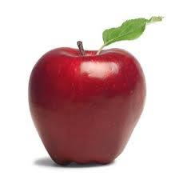

second grbgonefdbbrg
seconfdsssbsrfgbrbrb
para using position
para using position fff
second one
seconfdsss
second grbgonefdbbrg
seconfdsssbsrfgbrbrb
rgwrgbtsrbbgfrgbgrbThe position Property The position property specifies the type of positioning method used for an element. There are four different position values: static relative fixed absolute Elements are then positioned using the top, bottom, left, and right properties. However, these properties will not work unless the position property is set first. They also work differently depending on the position value.  position: static; HTML elements are positioned static by default. Static positioned elements are not affected by the top, bottom, left, and right properties. An element with position: static; is not positioned in any special way; it is always positioned according to the normal flow of the page: Here is the CSS that is used:
image
top or right